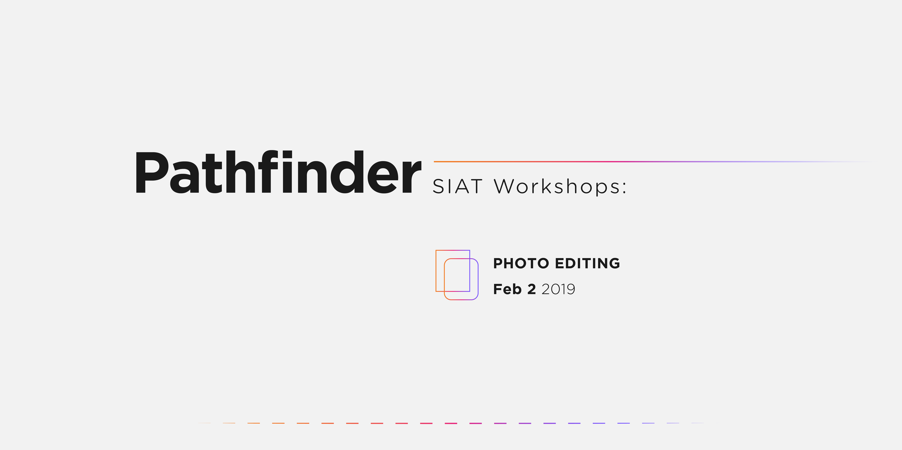
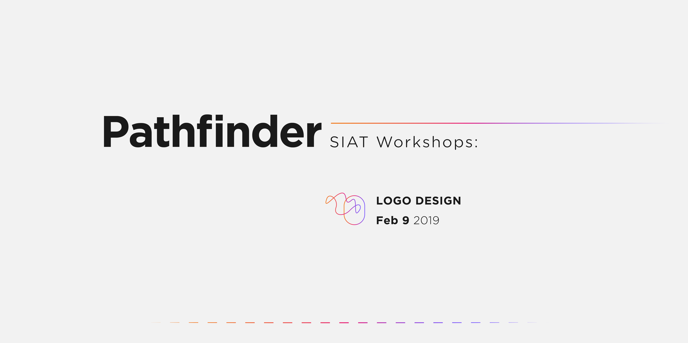
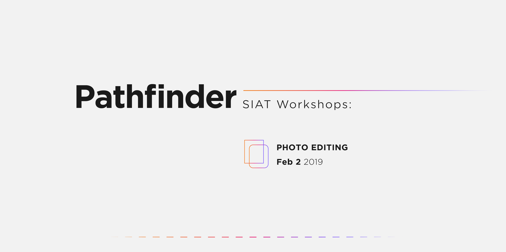
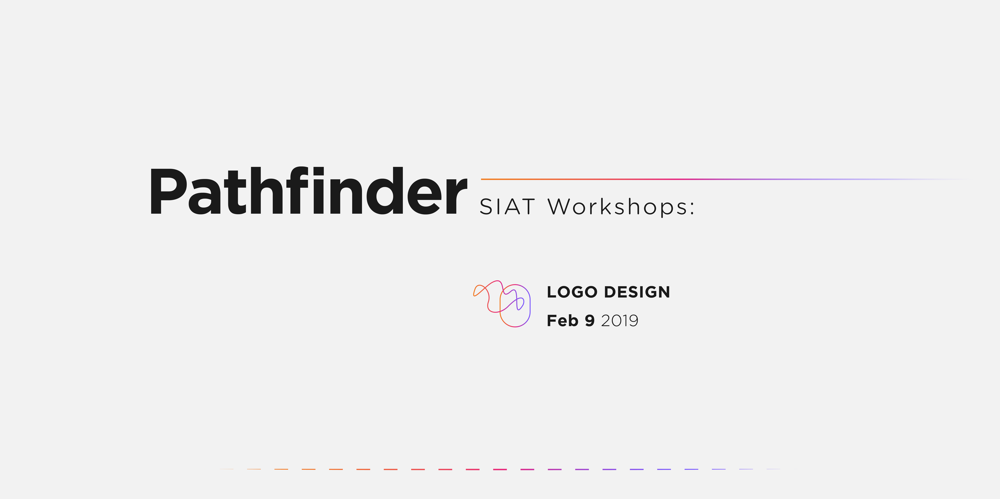

For my program's student union, IATSU (Interactive Arts & Technology Student Union), I was in charge of the overall image and design for 2018/2019. I was also the project lead for photo editing and logo design workshops, collaborating with industry professionals and faculty members to inspire, educate, and connect students with people who worked in the industry.
 


